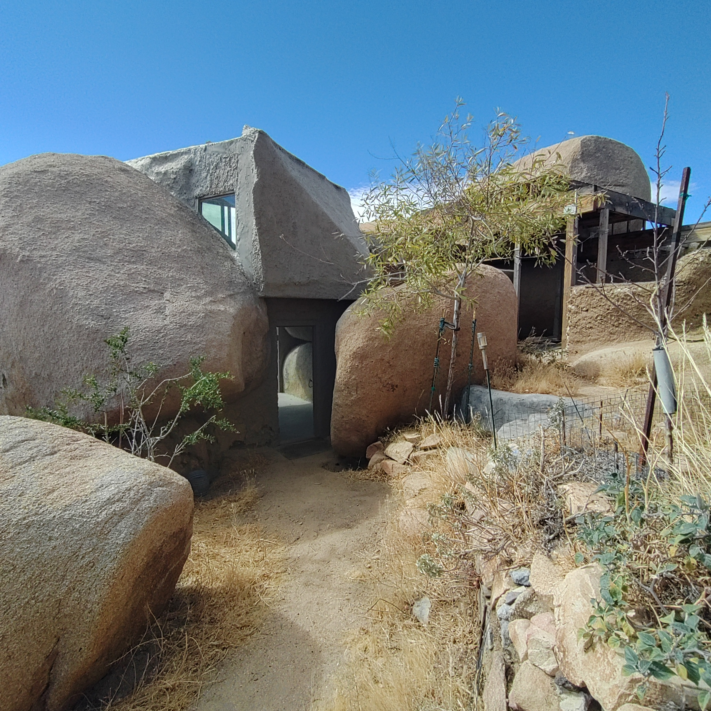
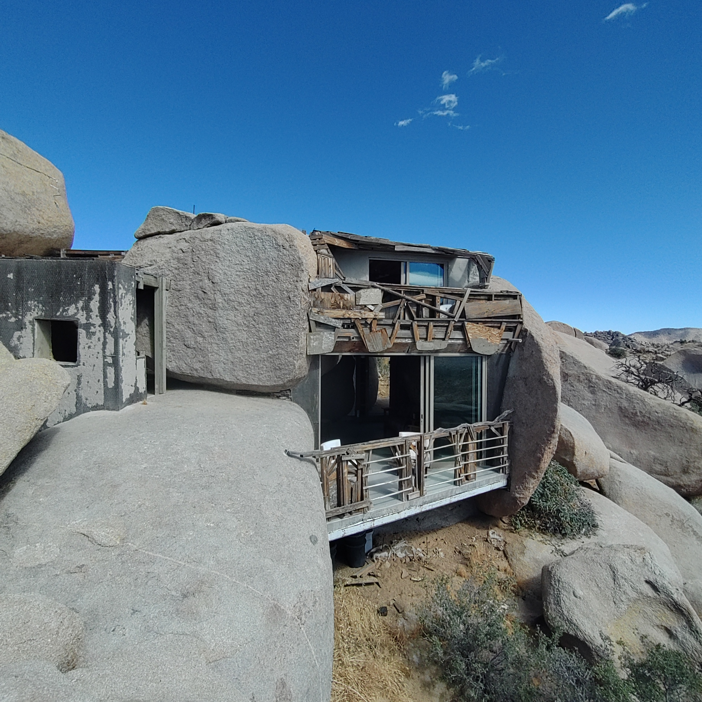
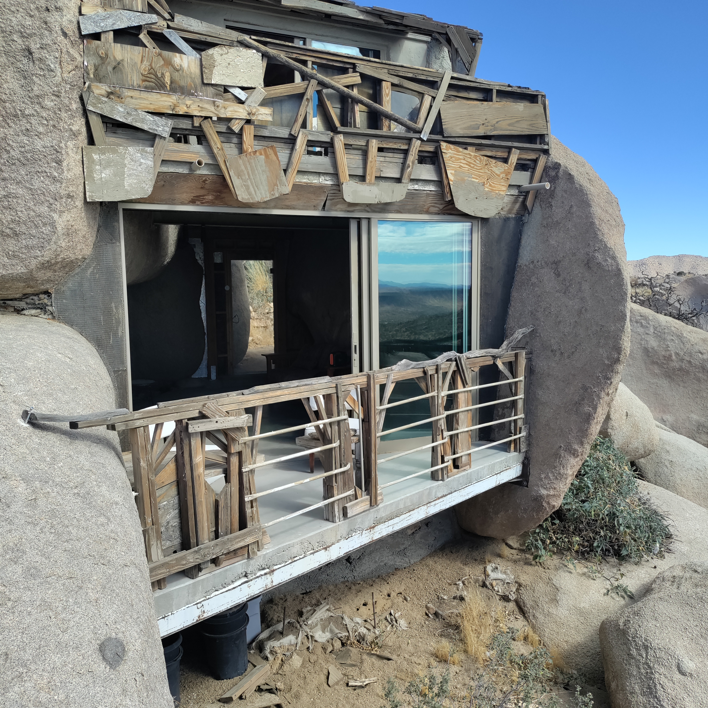
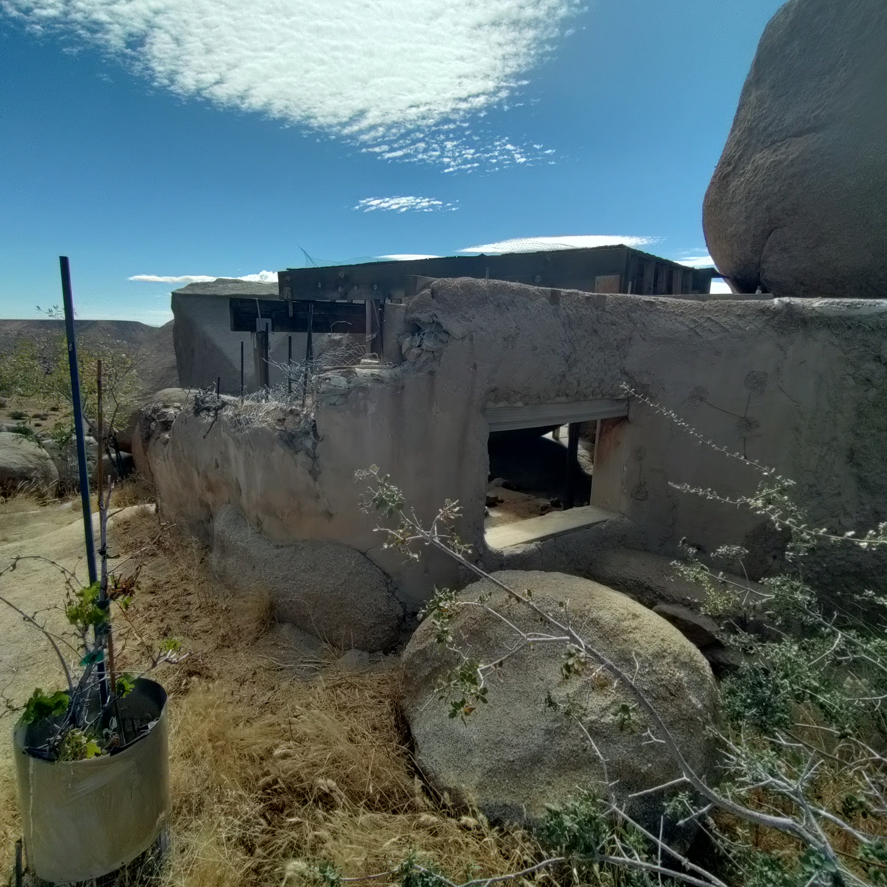
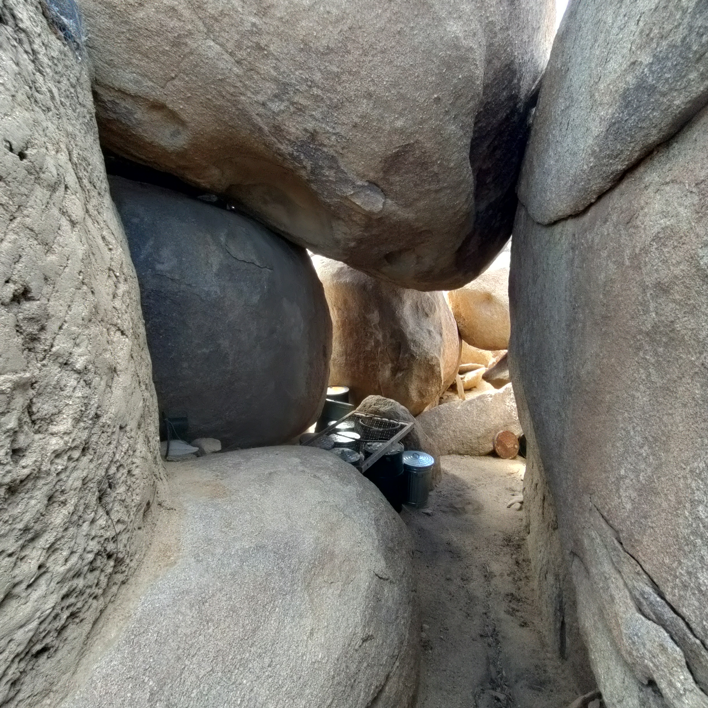
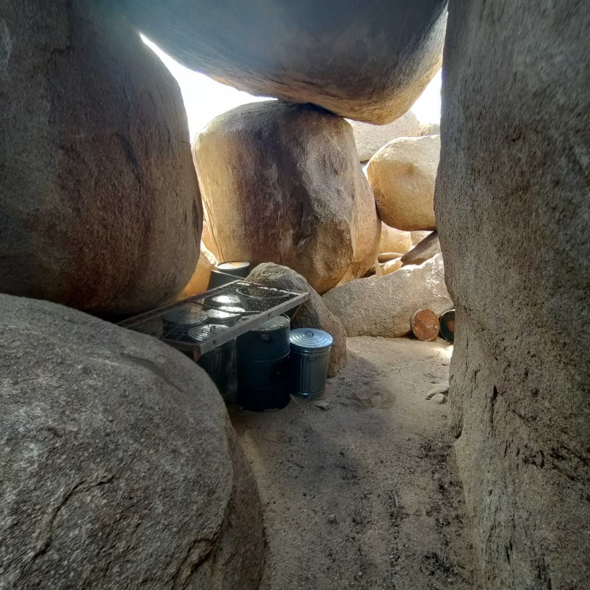
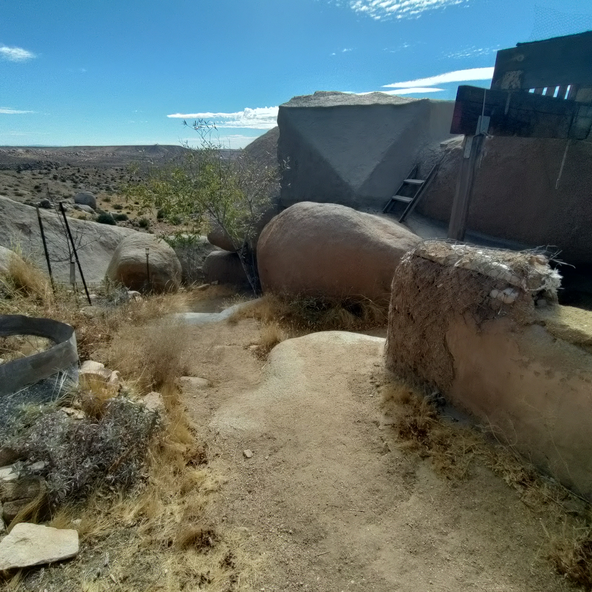
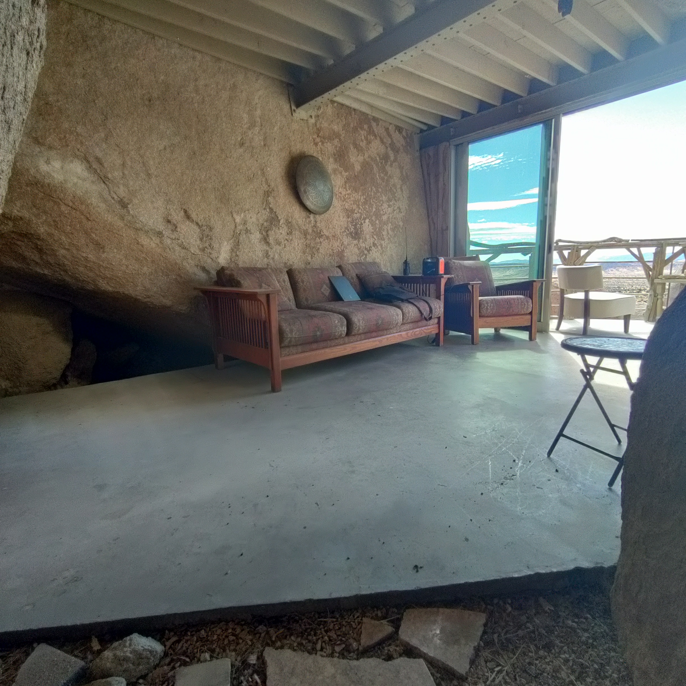
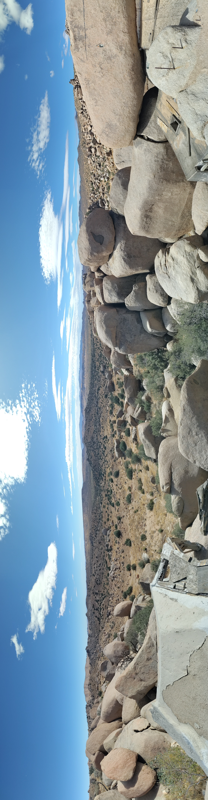

Field Report 016 · Projects
This is the
Boulder
House
This is the Boulder House one of only a couple of structures at Boulder Gardens Sanctuary It has a fantastic view across the valley.

It is an unused structure that has been sitting around for about 15 years. It has great potential as a community space or an overnight airbnb rental. Rock wall surfaces hold heat and coolness. Glass encloses the living room.
This is something I would like spend a month renovating. I'd return as much to a natural state as I could, removing particle board, foam, tar paper, and metals that don't belong there. There are some deep cuts in what were pristine boulders but it is almost perfectly natural.
It would be a great chance to use my natural building skills to create a truly natural living space
Photographic Record
The work, seen in place
Selected photographs from the private FieldStation source record.









System Thread
Related Fieldstation records
Public synopsis derived from Boulder Gardens Fieldstation Workbook source record FR016. Detailed equipment records, calculations, unresolved questions, and corrections remain in the workbook.